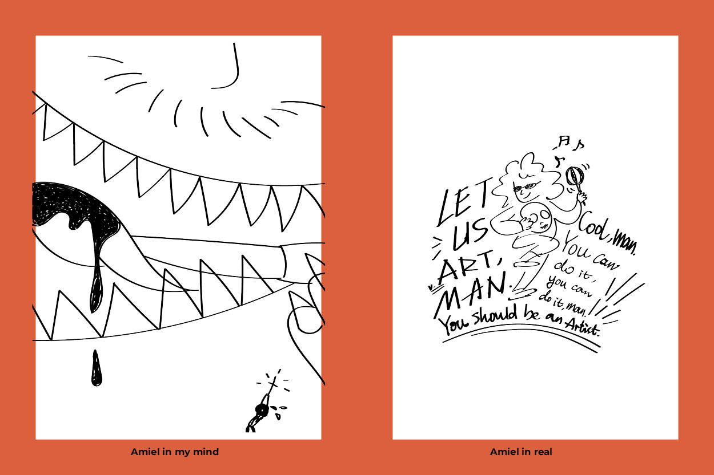
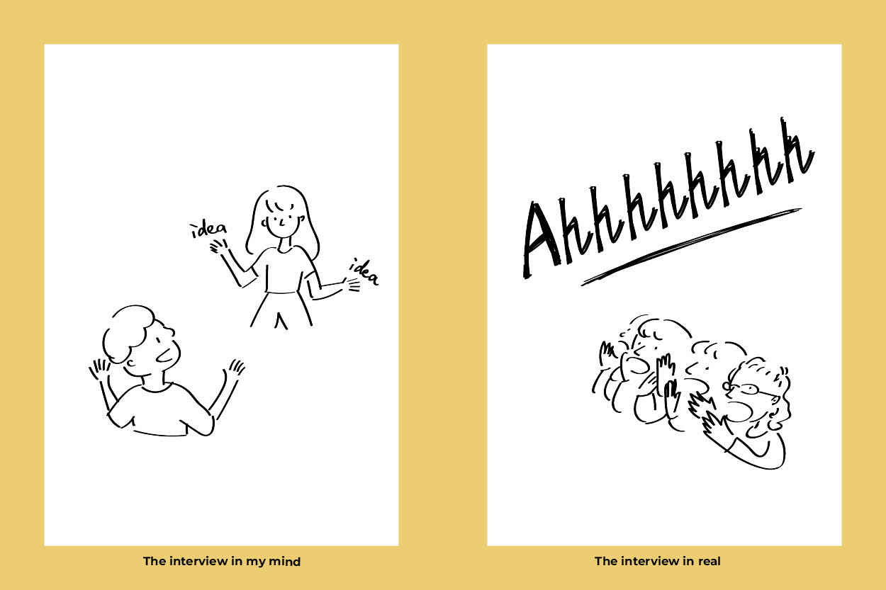
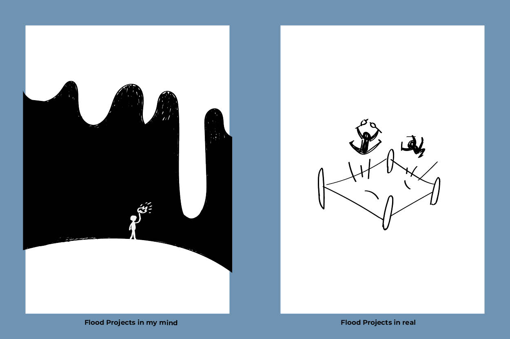
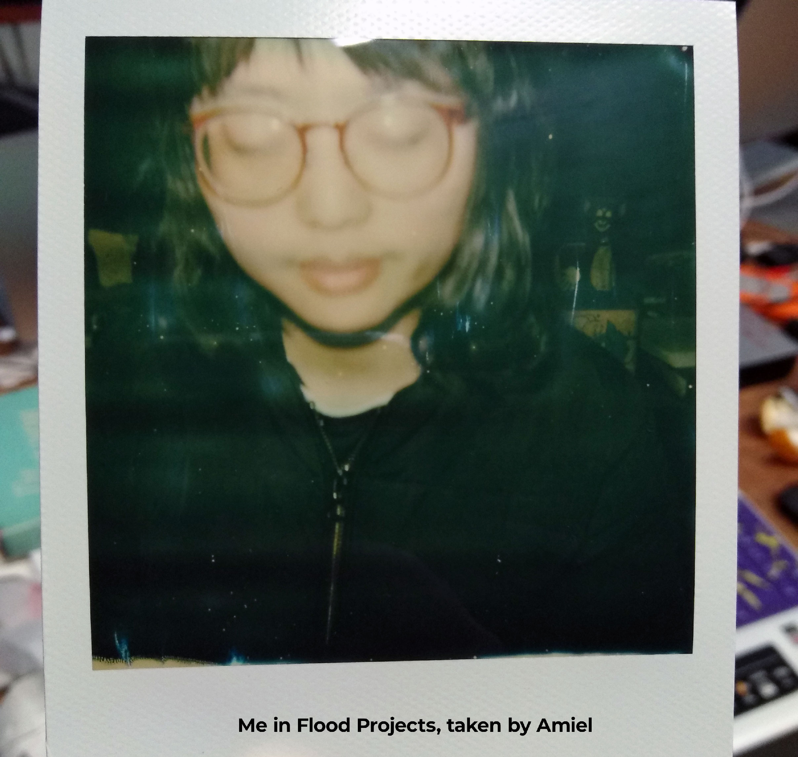

Mar. 2019
Are you still available (to try this together)?
#Interview #Application #TestJob #Trial #VoluntaryJob
I never thought about my interview would be that crazy. In my mind,
interviews are quite serious but the one with
Flood Projects was not like that.
Hello Flood Projects

I saw the info on The Design Kids website (and according to Jordan’s words,
they did not post this opportunity on Indeed or Seek because they think these
platforms are too commercial. They also prefer finding new hands in the FB groups,
however, they are in the film industry so they were lack of design networks). I applied
and got the email quite fast, with a task of redesigning their brand. They asked for three
options, I negotiated it to give just one, and they agreed.
That time I felt a little bit stressed because of two reasons. One is because
when I find the studio on Google Map and it looks quite odd - the position is there,
but I cannot find the specific sign telling me there is a studio (when I went there for
interviews, I found that it was hidden in the backside of a shop, very hard to find).
I also found the Instagram of the director, Amiel Courtin-Wilson, was different from what I expected - his
posts were very dark, talking about death and religions.
So generally I was kind of worried, will
this be a safe place for me or not?
When we meet

In the interview, I presented my works to Jordan, the producer of the studio.
He likes it and he let me wait for the approvement from Amiel.
After one week, I got the phone call and Amiel on the other side asked, “are you still available?”
You probably know the answer. So when I went to the studio for the second time,
we talked about art a lot, played with the drums, and in the end, he asked me if I scream
before (That was an unexpecting question, I cannot remember how we get to that point, but
I think for him, it was unexpected as well, because since then, he always introduces me to others starting
with this thing). I am the person that barely express emotions
in the forms of screaming or yelling so I said no. He was quite surprised and asked me
if I want to have a try now. I was shocked - it was the most strange conversation I had
in interviews. He felt my stress and said, “we can try together”. He also asked the producers
in the studio to stop their works and scream with me. Surprisingly, I was the last one
to stop (It has been too long time for me to scream again, the feeling was so complicated
and unforgettable). When I went out of the studio with a yes answer, I was still confusing
- what happened just now?
We work together

Working with Amiel and the Flood Project was mostly a fun process. I always
struggle between the art and design fields, so working as a designer in an art space
seems like the best fit for me - there is always someone that I can talk about art with
and they always support me to do anything, and I can design/create. We are all art wiz,
music lovers, fluffy conceptual communicators, so we always have a good time in the studio
(I feel it was like a kindergarten or a playground, all the experimental elements make
me excited). Do not have to mention that I had some funniest conversation pieces this year
here and they are all unforgettable.
During that time, I got my first time designing and developing a website for others
(with the experience testing all the platforms to figure out pros and cons for my website,
I have strong confidence of doing this kind of jobs and it turned out that I am quite good
on that). Besides designing for the digital part, I also designed film posters, which
seems old-schooled. Honestly, I am not a big fan of movies, so
Amiel and other producers helped me a lot. I still remember the first film poster
I designed was The Silent Eye, which is a portrait of the unspoken rapport between Cecil
Taylor and Min Tanaka. I finished that poster quite fast and smooth and did not think too
much about it afterwards, several months later, I tried a similar form of dancing art myself
without planned - It was quite magical (we will talk about that story later). Designing posters is not that easy, I often
stuck with ideas, especially when the elements and emotions are quite complicated and
conceptual in the films. Whenever that happens, Amiel shows me photos, (old) art books,
(new) art magazines, and we talk about it, so I feel comfortable to restart again.
The only thing that worried me was that I did not know it was a voluntary job (though
I feel strange because they never talk about money). But that time, I was mostly free and (I
value a lot working with funny people about art, so) I worked for interest and experience.
However, with more opportunities coming, I have to say goodbye to volunteering here but I
appreciate the time, the people, and the conversations.
Still feel the flood power

Till now, the people is still one of my strongest motivations to do the work -
the inspiring ones can always open my minds and encourage me exploring as many things
as possible without noticing. I always feel grateful for being asked if I am available,
and say “let us try together” when I face something new. Besides that, you will find
that I am (hugely) influenced by Amiel, Chris, Jordan, Delaney (who introduced me to
be the extras once), and many others working in the projects in other stories.
<-Before
Menu